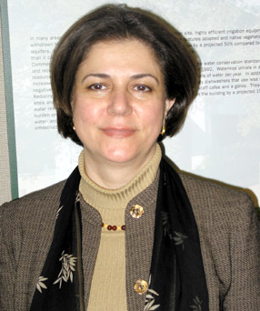

سایت زنستان: چند روز پیش وقتی میخواستم پیام تلفنی نسرین (خواهر پروین پایدار) را پاسخ گویم، ماشین پیام گیر او هنوز صدای پروین پایدار را روی ضبط صوت خود داشت. عجیب است که طی این دوسال که از فوت پروین می گذرد هر وقت به منزل او زنگ می زنم و صدایش را در پیام گیر می شنوم بغض گلویم را می گیرد و به سختی می توانم حرف بزنم. همین حالت وقتی پیش آمد که به تلفن دستی سروش (همسر پروین) زنگ زدم، آنجا هم صدای پروین بود. نه سروش و نه نسرین هنوز پس از گذشت دو سال دل شان نیامده که نوار را عوض کنند و یا صدای پروین را از روی آن پاک کنند. یاد حرف فروغ فرخزاد افتادم که "تنها صداست که می ماند!"
ولی صدای پروین تنها روی نوار پیام گیر تلفن های او و خانواده اش نمانده است. صدای او در نوشته های متعدد، کتابها، مصاحبه ها و مقاله هایش جاودانه شده است. صدایی که یکی از رساترین و گویاترین صداهای زنان ایران و خاورمیانه به حساب می آید. امروز به ندرت می توان پژوهشی جدی در زمینه زنان ایرانی را خواند که در آن صدای پروین منعکس نشده باشد. صدای پروین تنها در محافل دانشگاهی و نوشته های آکادمیک نیست که انعکاس یافته بلکه در فعالیت های عملی و مبارزاتی حق طلبانه زنان و نیز در پروژه های مربوط به کودکان توسعه و زنان در ایران و کشورهای مشابه نیز مورد استفاده و استناد قرار می گیرد. به خصوص کتاب مهم او زیر عنوان "زنان و فرایند سیاسی قرن بیستم در ایران" (1)
این کتاب از نگاه بسیاری از متخصصان یکی از معتبرترین آثاری است که تا کنون در زمینه تاریخ سیاسی و اجتماعی زنان ایران مدرن نوشته شده است. پروفسور نیکی کدی به تازگی یکی از آخرین کتابهایش در مورد زنان خاورمیانه (2) را به پروین پایدار تقدیم کرده است با این جمله که:
For Parvin Paidar 1949 – 2005
Who illuminated our minds and our lives all too briefly
«برای پروین پایدار 2005 – 1949، کسی که به اذهان و زندگانی های ما روشنایی بخشید، اما چه کوتاه».
آری عمر کوتاه اما زندگی پربار و پرحاصل پروین، روشنی بخش زندگی بسیاری از ما بوده است. با این که فقط چند سال از او کوچکتر بودم، بسیار از او آموختم. سرآغاز آشنایی من با کارهای او از طریق خواندن کتاب "زیر سایه اسلام: جنبش زنان ایران" (3) بود که در سال 1982 (1361 خورشیدی) توسط انتشاراتzed به قلم ناهید یگانه (پروین پایدار)، آذر طبری (افسانه نجم آبادی) و هاله افشار منتشر شد. این کتاب از اولین کتابهایی بود که پس از انقلاب درباره زنان نوشته شد و نشانگر شکل گیری گرایش های نظری و عملی مختلف در درون جنبش زنان ایران بود. جالب آنکه بیست سال بعد از زبان افسانه نجم آبادی هم شنیدم که آشنایی او با پروین نیز با کار مشترک برای نوشتن همان کتاب آغاز شد که به تدریج به یک دوستی عمیق میان آن دو انجامید.
ماجرای اختلاف نظرها و دوستی پرتلاطم این دو زن گرانمایه بی شک یکی از اسناد گویا و درخشان سیر تفکرات فمینیستی در ایران است. افسانه می گوید: "تا آنجا که من اطلاع داشتم، پروین در آن زمان تنها فمینیست سکولار و چپی بود که اعتقاد داشت باید پل همکاری میان زنان فعال مذهبی و سکولار ایجاد شود." (4)
ویرایشگر تیزبین انتشارات zed که گویی متوجه ظرفیت فوق العاده این دو شده بود از آنان دعوت کرد که کتابی در زمینه جنبش زنان ایران تدوین کنند و این درحالی بود که آنها دیدگاهی کاملاً متفاوت با یکدیگر داشتند. افسانه می گوید: "در آن زمان ما درباره همه چیز با هم اختلاف نظر داشتیم اما هر دو عادات کاری مشابهی داشتیم که همکاری ما را تسهیل می کرد. ما هرکدام یکدیگر را منظم، دقیق و قابل اعتماد یافتیم. این اعتماد بعدها به دوستی عمیق میان ما انجامید." و سرانجام نیز کتاب بعد از بحث و جدل های بی پایان، نوشتن ها و بازنویسی های فراوان، بالاخره با نوعی «توافق بر سر یک آتش بس موقت» آماده چاپ می شود. (5)
به نظر من این حکایت خود نشان از سعه صدر، انعطاف پذیری و نیز امنیت شخصیت (خودامنی) پروین (و نیز افسانه) دارد که علیرغم اختلاف دیدگاه ها به جای اتهام زنی و برچسب زنی که در آن زمان متداول بود (و متأسفانه هنوز هم تا حدی هست)، با هم کتابی مشترک نوشتند که در خدمت آموزش بین المللی در زمینه مسائل و مبارزات زنان ایران قرار گرفت. کاش هاله افشار در دسترس بود و از او که نویسنده سوم این کتاب بود می پرسیدیم او چگونه این کار مشترک را بازنگری و روایت می کند چرا که هاله نیز مثل افسانه و بسیاری دیگر از ما، از یک دیدگاه تند چپ آرمان گرایانه و ایدئولوژیک به طرف نوعی واقع نگری، اعتدال و پراگماتیسم رسیده است. یعنی بسیاری از ما دیرتر از پروین توانستیم از حصار قالب های تنگ ایدئولوژیک بیرون بیاییم. اختلاف نظرها و بحث ها بر سر استراتژی جنبش زنان، درک از فمینیسم و ارتباط آن با جنبش عمومی دموکراسی خواهی، پس از آن کتاب نیز سالها ادامه داشته است. آنچه که امثال پروین، افسانه، هاله و مرا به هم نزدیک کرد ادامه مطالعه و پژوهش، فعالیت و مبارزه و عشق و تعهد به جنبش برابری طلبی و رهایی بخش زنان و التزام به اصول جهان شمول حقوق بشر بوده است و نه ایدئولوژی و مسلک و مکتب و مذهبی خاص.
افسانه می گوید: "پروین بخشی از اندیشه خود را به من داد و من به تدریج به دیدگاه او رسیدم." و من مطمئن هستم پروین نیز بخشی از اندیشه افسانه را وام گرفته بود، همانطور که من و بسیاری از فعالان جنبش زنان و پژوهشگران این عرصه خود را وامدار پروین و افسانه و سایر پیشتازان نظریه پرداز، خلاق و نوآور فمینیسم ایران می دانیم.
دو سال بعد از آن کتاب، یعنی در 1984، پروین و افسانه و هاله به همراه عده ای دیگر از زنان ایرانی فمینیست ساکن لندن مجله نیمه دیگر را منتشر کردند و از چند تن از زنان فعال و فمینیست ایرانی ساکن آمریکا و کشورهای دیگر (از جمله خود من) نیز دعوت به همکاری نمودند. افسانه در باره نحوه کار نیمه دیگر می نویسد: "پروین در انتشار نیمه دیگر نقش کلیدی داشت. او بیش از همه افراد گروه به اهمیت همکاری زنان با باورها و گرایش های سیاسی متفاوت و تداوم این همکاری ها آگاه بود... به نظر من برجستگی پروین در وسعت نظر و بینش دورنگرانه (vision) او بود. زمانی که ما سکولارها دلایل زیادی داشتیم که از هر چیزی با برچسب اسلامی گریزان باشیم، پروین به گونه ای خارق العاده ضرورت همکاری میان زنان سکولار و مذهبی را دریافته بود و ما را به همکاری با آن زنان مذهبی که برای احقاق حقوق زنان فعالیت می کردند، ترغیب می کرد." (6)
شاید کنشگران و فعالین جوانتر جنبش زنان، بخصوص فمینیست های نسل پنجم ما، امروز اهمیت نقش پروین پایدار و امثال او را در جنبش کنونی زنان درک نکنند چرا که در بطن و متن سالهای بلافصل پیش و پس از انقلاب نزیسته اند. شاید باید به آن ها یادآوری کرد که چگونه در دهه های 50 و 60 خورشیدی (برابر با هفتاد و هشتاد میلادی)، محافل روشنفکری و گروه های سیاسی تحول طلب در ایران و بسیاری کشورهای دیگر "جهان سوم" تحت تأثیر و دنباله رو ایدئولوژی ها و گفتمان های انقلابی و قهرآمیز اعم از سکولار (امثال مارکسیسم – لنینیسم و مائوئیسم) و دینی (از جمله اسلام گرایی سوسیالیستی و بنیادگرایی اسلامی) قرار داشتند و گرایش غالب مبارزات آن دوره، ضدیت با امپریالیسم با انگیزه عدالت خواهی اجتماعی و طبقاتی بود و نه لزوماً آزادیخواهی و دموکراسی. همه چیز، از جمله فمینیسم که تازه توجه چپ های مارکسیست را نیز جلب کرده بود با معیارهای "پرولتری" از سوی آنان و با معیارهای اسلام گرایانه و ضد امپریالیستی (و البته در اصل ضد غربی) از سوی بنیادگرایان، مورد ارزیابی قرار می گرفت و معمولاً نفی و طرد می شد.
تازه همزمان با فروپاشی شوروی سوسیالیستی در دهه 90 میلادی (70 خورشیدی) و بعد از آن بود که موج سوم دموکراسی به منطقه ما نیز سرایت کرد. وقتی انقلاب 1979 (1357) به جای آزادی و عدالت موعود، دیکتاتوری سلطنتی را با یک نظام بسته دینی جایگزین کرد، به تدریج خیلی ها از ایدئولوژی های انقلابی گرا، مکتب پرستی و مذهب پرستی جزم گرایانه و قشری دست کشیدند و رسیدن به آزادی و عدالت را از طریق دموکراسی و روش های اصلاحی مسالمت آمیز و قانونی و بر مبنای اصول جهان شمول حقوق بشر از جمله حقوق زنان جستجو کردند. اما موانع زیادی بر سر راه ترویج، گسترش و غلبه این نگرش دموکراسی خواهانه وجود داشته است. از جمله اینکه در دهه اول بعد از انقلاب هر قدر حکومت اسلامی به طرف تمامیت خواهی و تک صدایی پیش رفت، شکاف و صف بندی های نظری و فرهنگی میان گروه های اجتماعی سنتی، مذهبی و اسلام گرا از یک سو و گروه های سکولار، لائیک و تجدد گرا از سوی دیگر، سیاسی تر، فاصله دارتر و حتا خصمانه تر شد. همزمان با این روند، حقوق زنان و آزادیهای مدنی در رأس قربانیان قوانین و سیاست هایی قرار گرفت که نتیجه اتحاد بین اسلام گرایان انقلابی، روحانیت سنتی و قشرهای محافظه کار و پدر سالار جامعه بود. لذا تعجبی ندارد که اولین نمایش های اعتراضی وسیع خیابانی و مخالفت ها و مقاومت ها در مقابل حکومت جدید از طرف زنان طبقه متوسط، حرفه مند و مدرن شهری صورت گرفت. هر قدر رژیم با نام اسلام، جنسیت گرایی آشکارتر و افراطی تری از خود به نمایش گذاشت و عملاً به سوی آپارتاید جنسی حرکت کرد، در صفوف زنان نیز شکاف و صف بندی اسلامی و سکولار و حتی ضد اسلامی بارزتر گردید. و البته این زنان غیراسلامی و سکولار بودند که سرکوب و به حاشیه رانده شدند.
در چنین فضای پرتنش، پرشکاف و خصمانه و پرستم، پروین پایدار شاید اولین فمینیست سکولار ایرانی بود که توانست از همان اوائل دهه 60 خورشیدی (80 میلادی)، فراتر از فضای موجود و ماوراء شکاف های مذهبی و ایدئولوژیک و علیرغم خشم و عصبانیت به حق زنان ستمدیده، منافع دراز مدت و مخرج مشترک های ممکن برای زنان در یک گستره تاریخی را دریابد و چشم انداز شکل گیری یک جنبش حق خواهی و لذا پی گیری استراتژی ائتلافی و نه ایدئولوژیکی را توصیه نماید.
همچنان که پروین پیش بینی کرده بود، طولی نکشید که ناتوانی و ناصادقی دولتمردان در ایجاد جامعه موعود عدل اسلامی، در صفوف زنان اسلام گرا نیز شکاف و چند دستگی و نارضایتی به وجود آورد. بسیاری از آنان با مشاهده چهره زمخت و خشن پدرسالاری حاکم و بی عدالتی ها و تبعیض های فزاینده، (به خصوص در قوانین خانواده)، به تدریج دچار بدبینی، مغبون شدگی و در نتیجه توهم زدایی نسبت به سیاست ها و گفتمان حاکم شدند و با وام گیری از گفتمان های فمینیستی و حقوق بشری، به بازنگری و چالش با قوانین و اصول شریعت مدون و موجود و تعبیر و تفسیرهای تساوی جویانه و حق طلبانه در متون اسلامی پرداختند. بسیاری از آنان اگر نه در نظر، که در عمل به خواسته ها و مطالبات و اعتراضات زنان سکولار نزدیک شدند. بطوریکه امروز فمینیست های مسلمان یا مسلمانان فمینیست نه تنها در ایران که در بسیاری از جوامع دیگر به بخش قابل توجهی از چالشگران بنیادگرایی اسلامی، و به منتقدان فقه و شریعت سنتی، و پدرسالاری مذهبی، تبدیل شده اند.
این فرایند پارادوکسیکال یا ناهمساز را اما کمتر کسی در میان فمینیست ها و پژوهشگران ایران پیش بینی و تحلیل کرده بود. زنان سکولار، به خصوص فمینیست های سکولار و لائیک آنقدر از فشارها، سرکوب ها و زورگویی های زنان و مردان اسلام گرا در رنج و عذاب بودند که طبیعتاً خشم و نفرت و کینه حاصله، مانع از آن می شد که توجهی به تحولات درونی صف اسلام گراها کرده و ظرفیت و امکان همراهی و همدلی با بخشی از آنان را در آینده نزدیکی به تصور آورند. از سوی دیگر نظرگاه های محدود کننده و مطلق گرای ایدئولوژیک و برداشت های ذات گرایانه (essentialist) از اسلام، فمینیسم، و سکولاریسم، مانع از آن می شد که پژوهشگرانه و بی طرفانه صحنه بزرگتر جامعه و دینامیسم های جاری در آن را مورد مشاهده و مداقه قرار دهند و حرکت تدریجی و ناگزیر جویبارهایی از هر دو سمت جامعه (سکولار و مذهبی) را به طرف دریایی که از انباشت نارضایتی ها ایجاد می شد، متوجه شوند. پروین پایدار شاید اولین پژوهشگر سکولاری بود که گویی با دوربینی مجهز به لنز (lens) فمینیستی، این صحنه تحولات را نه تنها متوجه شد بلکه با شهامت به بیان و تحلیل آنها پرداخت و در جهت تسریع و تسهیل این تحولات کوشید.
وقتی چند سال بعد نوشته ها و مجله هایی چون «زنان» امکان ظهور و حضور پیدا کردند، دیگر کمتر پژوهشگر بی غرضی می توانست همکاری و همراهی عملی و گاه حتی نظری فمینیست های پیشرو از هر دو طیف سکولار و مذهبی را نادیده بگیرد اگرچه این همکاری ها همچنان تنش ها و افت و خیزهای خاص خود را نیز به همراه داشته باشد.
پس از این حاشیه رفتن جهت توضیح برای نسل جوانتر، اجازه دهید به خاطراتم از پروین برگردم. همکاری من با نیمه دیگر که از اولین نشریات پژوهشی و فمینیستی ایران معاصر در خارج از کشور بود آشنایی مرا با نظریات و نوشته های پروین عمق بیشتری بخشید. ارتباط ما سال ها به طور دورادور ادامه داشت تا اینکه پروین دو سال پیش از مرگ خود به دلیل بازگشت بیماری سرطان، افغانستان را ترک کرد و به لوس آنجلس آمد تا در کنار خواهرانش به معالجه و مداوا بپردازد. از این زمان بود که من از نزدیک با شخصیت و روحیات پروین آشنا شدم. خبر بیماری مهلکش را خودش در یک گفت و گوی تلفنی به من داد، وقتی من از شدت تأثر قادر به ادامه مکالمه نبودم، او بود که دلداریم می داد. همیشه در طی این دو سال او را با روحیه ای قوی و برخوردی مثبت با مسائل و مشکلات دیدم. تلاش داشت زودتر بهبود یابد و به کارش در حوزه زنان و توسعه در افغانستان که زیر نظر سازمان ملل بود ادامه دهد.
پس از سالها دوری از افراد خانواده و کار در کشورهای مختلف، اکنون پروین کنار خواهران و مادر و پدرش بود و احساس آرامش و رضایت می کرد. همسرش (سروش) که هنوز در کابل مشغول کار برای سازمان ملل بود به دفعات به دیدارش می آمد. خواهرانش مثل پروانه دور شمع وجود او می چرخیدند. برایم جالب بود که افسانه دوست دیرین او، علیرغم کار و گرفتاری و بیماری مادر خودش، چندین بار از بوستون به لوس آنجلس آمد تا در کنار پروین باشد. یکی دیگر از دوستانش شهران طبری نیز از لندن به دیدار او شتافت.
جالب است که به رغم بیماری، از من خواست در دانشگاهی که کار می کنم برایش ترتیب یک پست تحقیقاتی بدون درآمد با وقت آزاد را بدهم تا از محیط کار و پژوهش دور نماند. با توجه به کارنامه درخشانش، به سادگی با تقاضای من موافقت کردند و او برای یک سال محقق مهمان دانشگاه شد که غنیمتی بود برای آشنایی و مراودت و الفت بیشتر با زنی که موتور محرکه اش برای زندگی و مبارزه، عشق و عدالت جویی و آزادیخواهی بود و نه کینه و انتقام جویی. او نمی خواست قربانی سرطان باشد و مثل قربانی رفتار کند. چنانکه در نوشته هایش نیز سعی داشت از ذکر مصیبت گفتن و قربانی نشان دادن زنان، پرهیز کند و تأکید خود را بر فاعلیت یا عاملیت (agency)، توانایی و توانمندی زنان بگذارد.
پروین تسلیم بیماری نمی شد. در همین مدت به دنبال خرید خانه کوچکی بود تا بتواند مستقل از خواهران زندگی کند و برای پدر و مادرش که از ایران به دیدن او می آمدند نیز پایگاهی ایجاد کند. او به همراه خواهرانش با چه حوصله و شوری این خانه کوچک را تعمیر و تجهیز کردند و با کارهای دستی و نقاشی هایی که پروین و سروش از آسیای مرکزی آورده بودند تزئین نمودند. پروین چند بار در این خانه پرصفا و مهر، مهمانی داد و همه دوستان و خویشاوندان را دور هم جمع کرد. یادم نمی رود وقتی برنامه های شیرین عبادی و یا مهرانگیز کار را در دانشگاه کالیفرنیا تدارک می دیدم، با چه شور و علاقه ای در آن ها شرکت کرد اگر چه حال خوشی نداشت.
بخشی از کتابهایش را به ایران فرستاد تا به کتابخانه صدیقه دولت آبادی هدیه شود و بخشی را نیز به کتابخانه ای در لوس آنجلس اهداء کرد. چند کتاب نیز به انتخاب خودش به من و افسانه داد. می خواست همه کارهایش را قبل از مرگ انجام دهد و همه چیز مرتب و منظم باشد از جمله وصیت نامه اش. او برخلاف عرف غالب در فرهنگ ما، در یک مصاحبه مفصل درباره مبارزه با بیماری اش نیز نکات جالب و آموزنده ای بیان می کند. (7)
به نظر من برای بسیاری از افراد نسل من، پروین الگویی بود برای یک زن قوی، مهربان، اندیشمند، مبارز و آزادیخواه. از او می شد هنر خوب زیستن و شاد بودن، هنر دقت در تحقیق و رعایت انصاف در نقد، هنر تحول بخشی در راه برابری خواهی، آزادی، عدالت و دموکراسی و در پایان حتا هنر خوب مردن را آموخت. در فرهنگ ما بسیاری هنوز هم شاد زیستن را مغایر با مبارز و جدی بودن تلقی می کنند و هنوز هم بسیاری از ما نمی دانیم چگونه با مرگ روبرو شویم. پروین در آخرین روزهای حیاتش، در وصیت نامه ای خطاب به همسر و خانواده و دوستانش نوشت:
"شما را با قلبی مالامال از عشق و شادی ترک گفته ام. عشق و شادی نزدیکی به شما. سپاسگزار زندگی ام، سپاس داشتن خانواده ام، دوستانم، کار و توانایی رویارویی با مرگ. همین موجبات را برای شما آرزو می کنم. در آخرین دوران زندگی دریافتم که ترس، واهمه، خشم و کنترلی که ما در تمامی زندگی، هر روز به آن می چسبیم چه کاذب است و چگونه در عرض دقایقی کوتاه می توان از آن رهایی یافت. غباری است که زندگی واقعی ما پشت آن جریان دارد. چه خوش اقبال بودم که زندگی واقعی در پس این پرده غبار را تجربه کردم و به این دلیل می توانم این اندیشه ها را در نهایت آرامش و شادی بنویسم... از زمانی که دانستم دیگر مداوایی برایم نمانده آرامش درونی بسیار یافته ام. انگار که از من دعوت کرده باشند راهی دنیای دیگری شوم... زندگی من کوتاه بود ولی گرانقدر، هیچ شکایتی از کوتاهی اش ندارم و سپاسمند زندگی ام. همه ما بالاخره روزی باید با مرگ مواجه شویم. کیفیت زندگی مهم است نه کمیت آن. یادتان باشد که چه خوش اقبالم که چنین آرامشی دارم و با خوشدلی سرنوشت خود را پذیرفته ام".
قرار است شنبه آینده، یعنی 20 اکتبر همراه خانواده پروین بر مزارش برویم و دومین سالگرد درگذشت او را پاس داریم، می دانم که صدای پروین را همچنان خواهم شنید چه زمانی که به نوشته هایش مراجعه می کنم، چه زمانی که نقل قول هایی از او در نوشته های دانشجویان و پژوهشگران ایران شناسی می خوانم، و چه زمانی که می خواهم به منزلش تلفن بزنم و جویای حال خواهران و همسر و پدر و مادرش باشم. صدای پروین، پایدار خواهد ماند!
پانوشت ها:
1. Paidar, Parvin. Women and the Political Process in Twentieth-Century Iran (Cambridge University Press, 1995)
2. Keddie, Nikki. Women in the Middle East: Past and Present (Princeton University Press, 2007)
3. Tabari, Azar & Nahid Yeganeh, Editors. In the Shadow of Islam: The Women’s Movement in Iran (Zed Books, 1982)
4. Najmabadi, Afsaneh. “Keeping going: Losing Parvin Paidar all too soon,” October 23:
http://iranian.com/Najmabadi/2005/October/Paidar/index.html
5. Najmabadi, Ibid.
6. Najmabadi, Ibid.
7. Eftekhari, Roza. Interview with Parvin Paidar, Zanan, No. 115, Azar 1383
توضیح:
- بخش هایی از این نوشته از مقالات دیگر این نویسنده درباره پروین پایدار نقل شده است. از جمله:
-Tohidi, Nayereh. “In Memoriam: On Parvin Paidar,” Middle East Studies Association Bulletin, 39, no. 2, 2005, pp. 306-307.
-Tohidi, Nayereh. Nimeye Paidar (Obituary on Parvin Paidar), October 23, 2005:
http://www.iranian.com/Women/2005/October/Paidar/index.html
-Tohidi, Nayereh. “Yadvareh-ye Parvin Paidar,” 84/8/8 in October 2005:
http://www.iftribune.com/news.asp?id=19&pass=90
- در ادامه یکی از مقالات نویسنده (نیره توحیدی) را با عنوان «پروین پایدار است» که به زبان انگلیسی چاپ و توسط آذین ایرانمنش برای مجموعه حاضر ترجمه شده است را در زیر می توانید ملاحظه فرمایید (زنستان):
پروین پایدار است ! / نیره توحیدی / مترجم آذین ایرانمنش
پروین پایدار ، دوست و همکار عزیز بسیاری از ما در زمینه مطالعات ایران و زنان و مطالعات جنسیت در روز 28 مهر 1384 پس از نبردی 2 ساله با توموری که به بدنش بازگشته بود درگذشت .او که در روز 7 مهر ماه 1328 متولد شده بود با درگذشت خود ما را با احساس فقدان و اندوه تنها گذاشت . عمر کوتاه و پربار او دانش فمنیستی ما را برای نبرد جهت کسب حقوق برابر ، دموکراسی ، آزادی و عدالت غنی ساخت .
به طور کلی مطالعات زنان در خاور میانه و به ویژه جنبش زنان معاصر در ایران ، با درگذشت پروین پایدار یکی از بهترین محققان فمنیست خود را از دست داد . کتاب پروین پایدار با عنوان زنان و فرآیند سیاسی قرن بیستم در ایران (1) - Women and the Political Process in Twentieth Century Iran Cambridge
UK : University of Cambridge , 1995 - تا کنون کتابی است که نظیری برای آن نیامده است . به تعبیر دکتر نیکی کدی این کتاب بهترین کتابی است که تا کنون درباره تاریخ زنان خاور میانه در ایران نگاشته شده است.
نوشته های بی شمار پروین درباره جنسیت و نتایج توسعه اجتماعی از آموزه های آکادمیک او در زمینه جامعه شناسی ، به انضمام دکترای وی در زمینه جامعه شناسی سیاسی از دانشگاه لندن و نیز از تجربه های عملی وی در ایران ، پاکستان ، افغانستان و از بکستان نشئت گرفته است .
پروین پایدار با سالها کار در موسسه های مختلف از جمله " شورای پناهندگان انگلستان " ، " برنامه های خدماتی برای بوسنی " ، " خدمات جهانی دانشگاهی "، "نجات کودکان" و خدمت داوطلبانه ماوراء دریاها " ،بنیاد توسعه برای زنان سازمان ملل ( یونیفم UNIFEM) سالهای متمادی به زنان و کودکان خدمات ارائه کرده است . پروین هم چنین به همراه گروهی از فمنیستهای ایرانی و برخی از فمنیستهای غیر ایرانی در لندن یکی از ویراستاران و بنیانگذاران مجله نیمه دیگر است که اولین مجله فمنیستی و حرفه ای منتشر شده در ایران پس از انقلاب 1979 می باشد .
به تعبیر همکار قدیمی و دوست نزدیکش افسانه نجم آبادی :" او بيش از همه افراد گروه به اهميت همکاری زنان با باورها و گرايش هاي سياسي متفاوت و تداوم این همکاری ها آگاه بود... به نظر من برجستگی پروين دروسعت نظرو دورنگری (Vision) او بود. زماني كه ما سكولارها دلايل زيادي داشتيم كه از هر چيزی با برچسب اسلامي گریزان باشيم، پروين به گونه ای خارق العاده ضرورت همکاری میان زنان سكولار و مذهبي را دریافته بود و ما را به همکاری با زنان مذهبی که برای احقاق حقوق زنان فعاليت مي كردند، ترغيب مي كرد."
پروین یک ائتلاف ساز بود و نه یک نظریه پرداز جدایی افکن . به عنوان یک شخص نیز او چون زاده عشق یود ، تفاهم و یکدلی رابه جای نفرت و انتقام از افرادی که با او از لحاظ ایدئولوژی فرق می کردند و حتی او و دیگر سکولارها را دارای عقاید غلط می پنداشتند ، انتخاب کرد . او از هر گونه اصول جزمی سخت و تبعیض ها و فرقه گرایی های کورکورانه رها بود . در حالی که این گونه رهایی از این حالات فردی در طول اوائل سالهای پس از انقلاب ایران و آن هم در حالیکه جزمی نگری های دین سالارانه و سیاستهای دولتی سرکوب کننده فضای کوچکی را برای گفتگو ، تحمل و تکثر گرایی باز گذاشته بود ، نادر و کمیاب به نظر می آمد . برای بسیاری از ما پروین یک الگوی الهام بخش بود که همه ما هنر خوب زندگی کردن ، تحقیق به جا و نبرد موثر برای عدالت و آزادی و حتی هنر آرام مردن را از او آموختیم .
در طول آخرین ماه نبردش با سرطان ، یک قطعه کوتاه تکان دهنده به عنوان بخشی از وصیت نامه اش نوشت . او وصیت نامه را چنین آغاز می کند : " برای شوهر عزیزم ، خانواده و دوستانم " ، و در ادامه چنین می آورد : " شما را با قلبی مالامال از عشق وشادی ترک گفته ام. عشق و شادی نزدیکی به شما. سپاسگزار زندگی ام، سپاس داشتن خانواده ام، دوستانم، کار و توانایی رویارویی با مرگ. همین موجبات را برای شما آرزو می کنم. در آخرین دوران زندگی دریافتم که ترس، واهمه، خشم، و کنترلی که ما در تمامی زندگی، هر روز به آن می چسبیم چه کاذب است و چگونه در عرض دقایقی کوتاه می توان از آن رهایی یافت. غباری است که زندگی واقعی ما پشت آن جریان دارد. چه خوش اقبال بودم که زندگی واقعی در پس این پرده غبار را تجربه کردم و به این دلیل می توانم این اندیشه ها را در نهایت آرامش و شادی بنویسم... از زمانيكه دانستم ديگر مداوایی برایم نمانده آرامش درونی بسیار یافته ام. انگار که از من دعوت کرده باشند راهی دنیای دیگری شوم...زندگی من کوتاه بود ولی گرانقدر، هیچ شکایتی از کوتاهی اش ندارم و سپاسمند زندگی ام. همه ما بالاخره روزی باید با مرگ مواجه شویم. کیفیت زندگی مهم است نه کمیت آن. یادتان باشد که چه خوش اقبالم که چنین آرامشی دارم و با خوشدلی سرنوشت خود را پذیرفته ام."
برای آشنایی بیشتر با جنبه های شخصی ، سیاسی و گرایش های ذهنی پروین پایدار می توانید مصاحبه ای را که رزا افتخاری با حساسیت و مهارت تمام در طول بیماری پروین با او انجام داده و در مجله زنان به زبان فارسی در شماره 115 به چاپ رسیده است بخوانید . ( آدرس اینترنتی مجله :www.zanan.co.ir)
اجازه دهيد از طرف همه دوستان و آشنايان پروين تسليت صميمانه خود را به همسر مهربانش آقاي سروش جوادي مطلق، مادر و پدر گرامياش خانم هما پايدار و آقاي اصغر پايدار و خواهران مهربانش خانمها نسرين، زرين، شيرين و نوشين كه همگي تا آخرين دقايق زندگي پروين مثل پروانه دور شمع وجود او چرخیدند و از او مراقبت كردند، تقديم نمايم. در حالیکه برای درگذشت پروین عزاداریم، بیایید زندگی غنی و پر ثمر او را همراه با خاطرات خوب او از انرژی مثبتش ، صورت خندانش ، و سهم بزرگش به تحقیق و جنبش زنان نسل خودمان برای نسلی که در راه است ، جشن بگیریم .